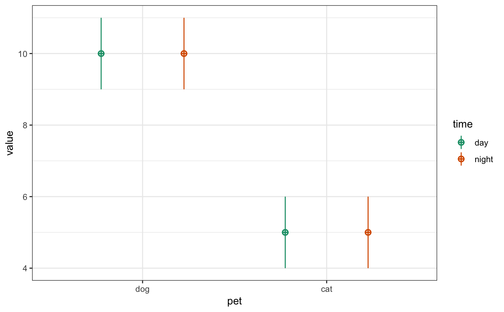
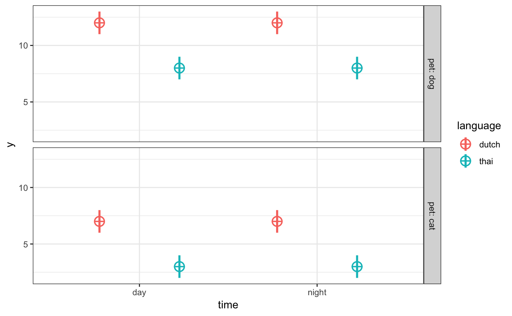

Specify any number of within- and between-subject factors with any number of levels.
check_design( within = list(), between = list(), n = 100, mu = 0, sd = 1, r = 0, dv = list(y = "value"), id = list(id = "id"), vardesc = list(), plot = faux_options("plot"), design = NULL, fix_names = TRUE )
| within | a list of the within-subject factors |
|---|---|
| between | a list of the between-subject factors |
| n | the number of samples required |
| mu | a vector giving the means of the variables |
| sd | the standard deviations of the variables |
| r | the correlations among the variables (can be a single number, full correlation matrix as a matric or vector, or a vector of the upper right triangle of the correlation matrix |
| dv | the name of the DV column list(y = "value") |
| id | the name of the ID column list(id = "id") |
| vardesc | a list of variable descriptions having the names of the within- and between-subject factors |
| plot | whether to show a plot of the design |
| design | a design list including within, between, n, mu, sd, r, dv, id |
| fix_names | fix variable names so special characters become . or _ (default TRUE) |
list
Specify n for each between-subject cell; mu and sd for each cell, and r for the within-subject cells for each between-subject cell.
This function returns a validated design list for use in sim_data to simulate a data table with this design, or to archive your design.
See vignette("sim_design", package = "faux") for details.
within <- list(time = c("day", "night")) between <- list(pet = c("dog", "cat")) mu <- list(dog = 10, cat = 5) vardesc <- list(time = "Time of Day", pet = "Type of Pet") check_design(within, between, mu = mu, vardesc = vardesc)between <- list(language = c("dutch", "thai"), pet = c("dog", "cat")) mu <- list(dutch_dog = 12, dutch_cat = 7, thai_dog = 8, thai_cat = 3) check_design(within, between, mu = mu)